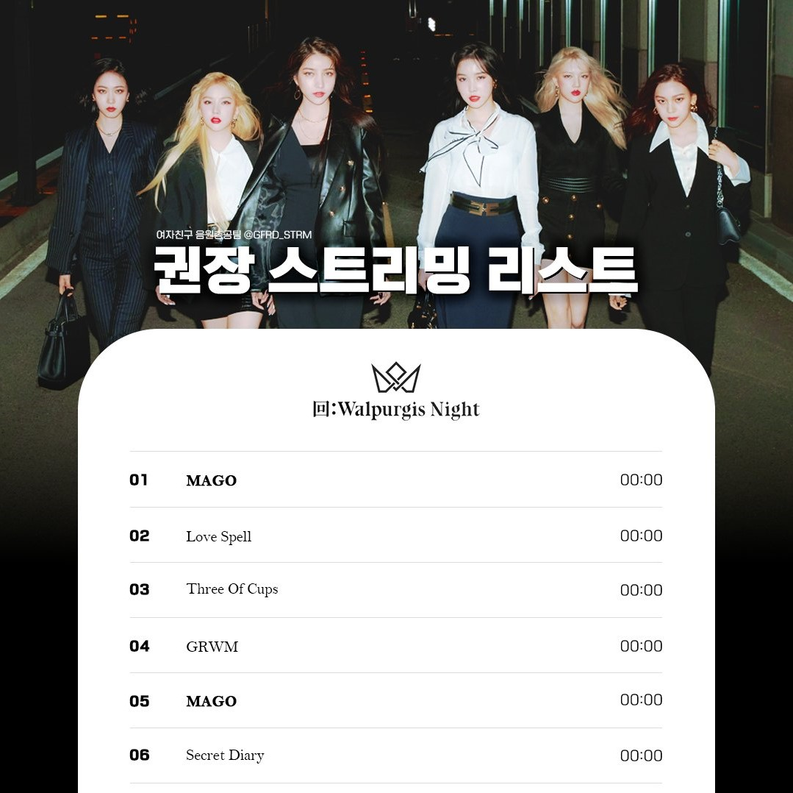
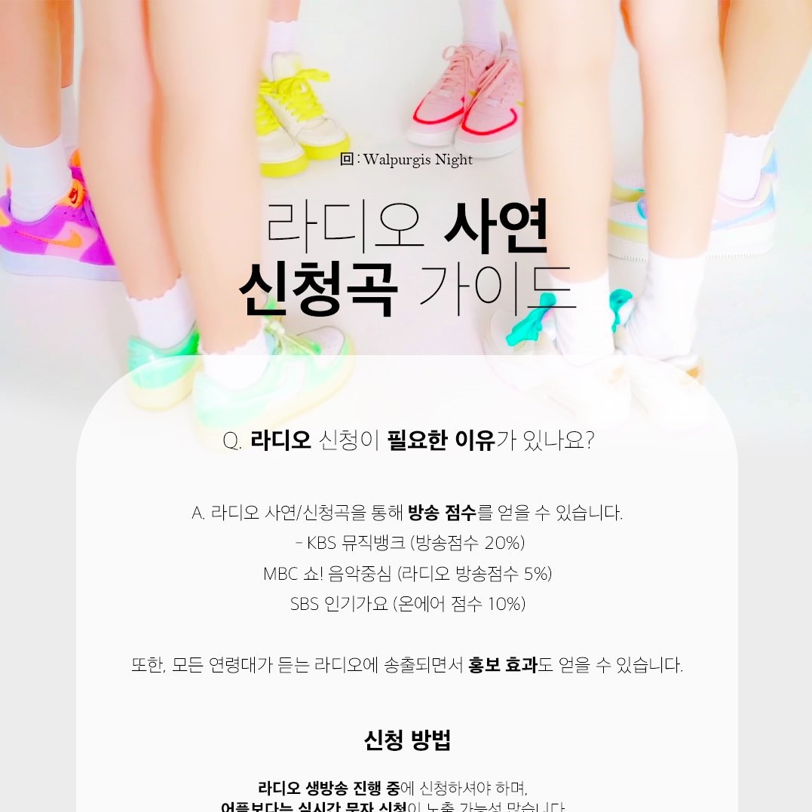

권장 스트리밍 리스트
MAGO 권장 스트리밍 리스트 (임시 ver.)
- 랜덤재생/구간 반복/한곡 재생❌, 전체 반복 재생⭕
- 음원 공개 후 변경 가능성이 있음을 알립니다.

라디오 사연/신청곡 가이드
라디오 신청곡은 각 음악방송 순위 집계 시
방송점수로 들어간다는 사실! 다들 아셨나요?
라디오를 통해 여자친구 노래도 홍보하고 방송점수도 얻고! 🎵🎶

음악방송 반영 비율/투표 일정 (ver. 201106)
음악방송 반영 비율 및 투표 일정(ver. 201106)
투표 일정을 보시고 미리 앱설치 및 투표권 모으기를 시작해 주세요📧
(자세한 내용은 트위터 게시물을 확인해주세요)